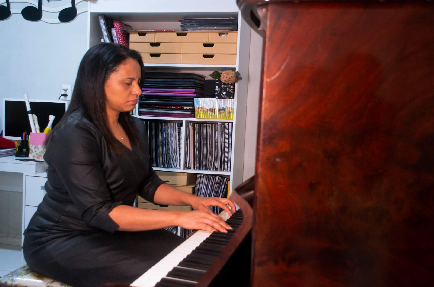
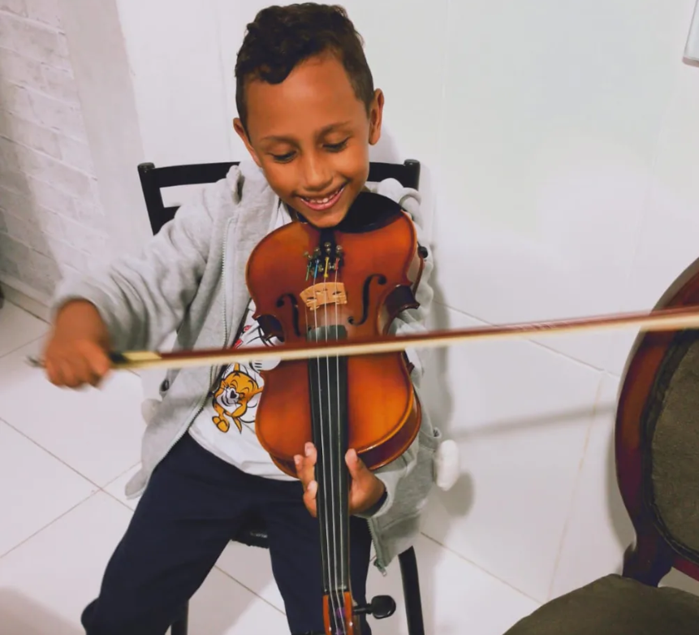

Piano
Desenvolvimento técnico, interpretação e musicalidade.
Harmonia • Aulas de Música
Aulas de piano, órgão, teclado, teoria musical e musicalização para quem quer aprender música de verdade.

Além das notas
É desenvolver técnica, percepção, confiança e, principalmente, musicalidade. Na Harmonia, cada aula é um espaço para escutar com atenção, praticar com propósito e construir uma relação verdadeira com a música.
Conheça o método
Escolha o instrumento, comece de onde você está e encontre espaço para evoluir no seu ritmo.
Desenvolvimento técnico, interpretação e musicalidade.
Preparação e desenvolvimento para organistas.
Aprendizado do instrumento e desenvolvimento musical.
Fundamentos, leitura e compreensão musical.
Formação direcionada para quem deseja desenvolver-se como organista.
Contato com a música desde os primeiros anos.

Acompanhamento de verdade
Mais do que ensinar um instrumento, a Harmonia acredita em acompanhar trajetórias. Com proximidade e cuidado, cada encontro se adapta ao momento e aos objetivos de quem aprende.
Vamos conversarEntender o aluno e seus objetivos.
Criar uma jornada personalizada.
Transformar conhecimento em prática.
Acompanhar cada etapa do desenvolvimento.
Harmonia, em essência
“Não é apenas aprender a tocar. É descobrir o que a música pode despertar em você.”PAUSA / ESCUTA / EXPRESSÃO

[Depoimento real do aluno]
[Nome do aluno]

O próximo compasso é seu
Conheça as aulas da Harmonia e encontre o caminho que combina com você.